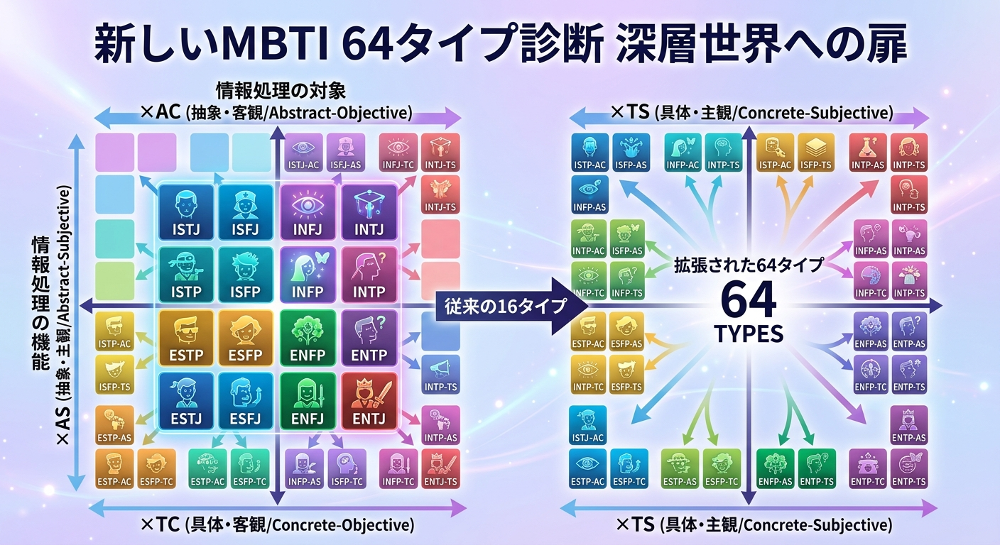
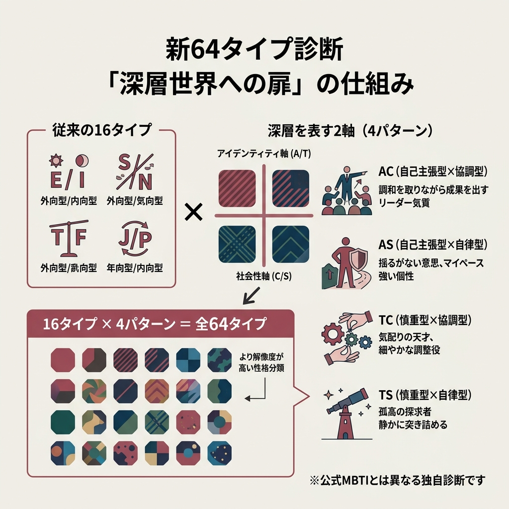
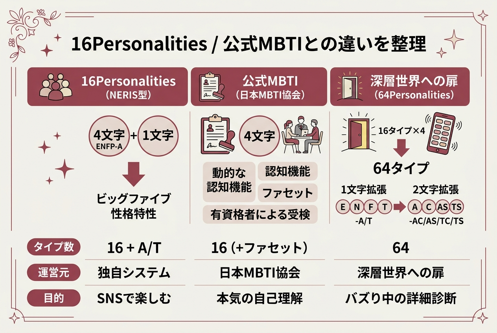
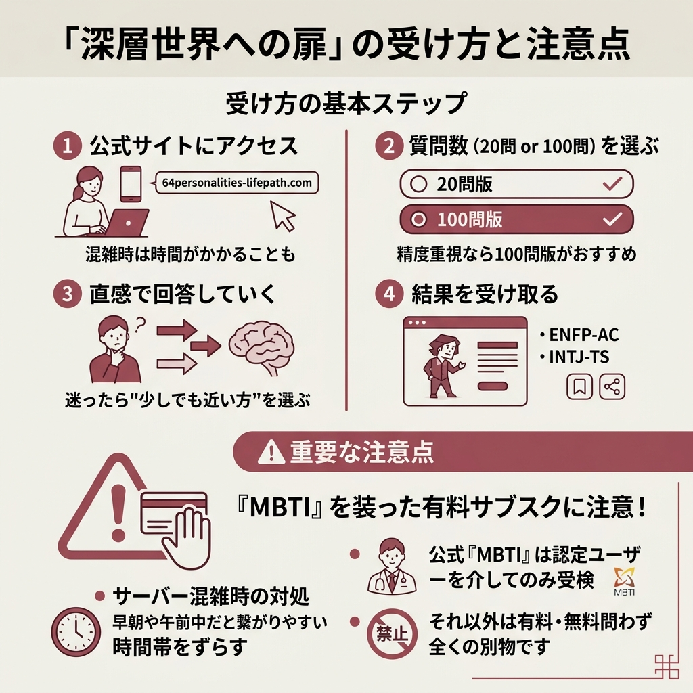

「MBTI 新しい」で検索する人がいま急増しています。きっかけは2025年12月、「深層世界への扉」と呼ばれる新64タイプ診断がSNSでバズり、公式サイトがアクセス集中でダウンするほどの騒ぎになったこと。Yahoo!知恵袋では「サイトが全く開けない」という質問に19件もの回答がついていました（参考: Yahoo!知恵袋の該当投稿）。
ただ「新しいMBTI」と一口に言っても、実は3つの別々の潮流が混ざって語られています。上位記事を10本読み比べたら、それぞれ違う文脈で「新しい」と言っていてけっこう混乱しました。この記事ではその3つを切り分けつつ、いま一番バズっている64タイプ診断「深層世界への扉」の仕組みを、公式サイトと解説記事の情報から丁寧にまとめていきます。

まず結論から。「新しいMBTI」という言葉は、3つのまったく別のトピックを指して使われています。ここを分けないと話がずっと噛み合いません。
いま検索ボリュームを押し上げている主役がこれ。従来の16タイプに2つの軸を追加して64タイプに細分化した診断で、公式サイトは64personalities-lifepath.com。2025年12月に話題が爆発し、サーバーが落ちるほどの人気でした。
友達が「私ENFP-AS！」って言ってて、ENFPの後ろの「AS」って何…？ってなりました。
そのハイフンの後が、まさに64タイプ診断で追加された2軸なんです。ここから読み解けば一気に理解できますよ。
世界最大級の性格診断サイト16Personalities（NERIS型）も継続的にアップデートを重ねています。TFPグループの解説記事によると、2026年時点でアイデンティティ（A/T）判定アルゴリズムの精密化、4グループ内のサブ分類追加、多言語対応強化などが行われているとのこと。
日本MBTI協会（mbti.or.jp）が扱う公式MBTIにも、Step I → Step II → Step IIIという進化があります。Step IIIは認知機能の発達段階とタイプダイナミクスを動的に測定するもので、「同じINFJでも個人差を詳細に説明できる」のが特徴らしいです（出典: TFPグループ コラム）。
この記事で主に扱うのは1番目の「深層世界への扉」です。検索者の多くがこちらを指しているため、以降はこの64タイプ診断を中心に深掘りしていきます。

ざっくり言うと、16タイプに「深層」をあらわす2軸を足して64タイプにしたもの。SNSでは「新MBTI」と呼ばれていますが、公式MBTI（日本MBTI協会）とは別の診断なので、そこは最初に分けておきましょう。
従来のMBTI（16タイプ）は、次の4指標の組み合わせで決まります。ここはおさらい程度に。
深層世界への扉では、この16タイプにさらにアイデンティティ軸（A/T）と社会性軸（C/S）を組み合わせた4パターンを掛け合わせます。16タイプ × 4 = 64タイプ、というわけです。
ここが一番ややこしいところ。解説記事を読み比べると、2軸は次のように定義されています。
| 記号 | 意味 | ざっくり特徴 |
|---|---|---|
| A（自己主張型） | アイデンティティ軸 | 安定感があり自信を持って動く |
| T（慎重型） | アイデンティティ軸 | 繊細で自己調整が多い |
| C（協調型） | 社会性軸 | 周囲との調和を大切にする |
| S（自律型） | 社会性軸 | 自分の価値観やこだわりを重視 |
この2軸を掛け合わせると、AC / AS / TC / TS の4パターンに分かれます。matchinglifeの解説によれば、それぞれの性格傾向はこんな感じ。
たとえば同じENFPでも、ENFP-ACなら「みんなをまとめるお祭り型ENFP」、ENFP-TSなら「内側に創作世界を抱える物静かなENFP」みたいに解像度が上がる、という発想ですね。
もう一つSNSでよく出てくるのがライフパスナンバー。これは生年月日から算出する数秘術系の数字で、深層世界への扉では「魂の鑑定」という別モードで使われています。matchinglifeのFAQには「知性のあなた（性格診断）」と「魂のあなた（ライフパスナンバー）」という2面構成になっていると書かれていました。
64タイプと言われても、正直ぱっと覚えられる量じゃないですよね。そこで役に立つのが、従来の16タイプでも使われている4つのグループ分類。matchinglifeの記事で紹介されていた整理をベースに、ざっくり並べます。
論理的で知的好奇心が旺盛な戦略家タイプ。16タイプでいうINTJ・INTP・ENTJ・ENTPの4つで、64タイプではそれぞれにAC/AS/TC/TSが付くので計16種類になります。
たとえばENTJ-ACなら「巻き込み力のある経営者肌」、INTP-TSなら「ひとりで静かに研究するタイプ」みたいな読み方です。
理想を追求し、人を導く共感タイプ。INFJ・INFP・ENFJ・ENFPの4タイプが含まれます。深層世界への扉では、このグループは特にAC/TCの「協調寄り」が多く語られがちですが、AS/TSでも「静かに信念を貫く外交官」のような読み方ができるのが面白いところ。
現実的で責任感が強く、伝統を重んじる守護者タイプ。ISTJ・ISFJ・ESTJ・ESFJの4タイプ。64タイプ化すると、同じISTJでもAC型は「気さくな現場リーダー」、TS型は「黙々と品質を守る職人」というように、職場での役割差まで見えてきます。
柔軟で適応力があり、感覚を大切にする実践家タイプ。ISTP・ISFP・ESTP・ESFPの4タイプです。SP系は元々「その場の感覚で動く」傾向が強いですが、AS型なら「我が道を行くアーティスト」、TC型なら「場の空気を読む調整役」と、ぐっと違う顔が出てきます。
「新しいMBTI」がここまで広がったのは偶然ではなく、SNSとの相性がやたら良かったから。デジタルアイデンティティ社のブログでは、バズの背景を「シェア前提の設計」と分析していました（参考: mintzplanning.com）。ここは3つに絞って紹介します。
16タイプだけだと、「私もINFPだけど、あの人とは全然違う気がする」というモヤモヤを説明しづらかったんです。64タイプではそこにAC/AS/TC/TSの記号が足されるので、「INFP-ACは人のために動くINFP」「INFP-TSは静かに創作するINFP」みたいに言葉にしやすい。
ただのINFPじゃ物足りなくなってきたってこと？
そう、「もっと自分にピッタリのラベルがほしい」需要と合致したんですよね。
mintzplanningのブログで面白いと思ったのが、「スクショするだけ・加工しなくていい・文章を考えなくていい」の3点セット。診断結果のキャラ画像がそのままストーリーズに貼れるので、投稿のハードルがほぼゼロなんですよね。
しかも4文字＋ハイフン＋2文字（例: ENFP-AC）という短い記号で自己紹介できる。プロフィール欄にも収まります。
matchinglifeの記事は実質的に恋愛診断サイトなのですが、「AC/AS/TC/TS別の恋愛傾向」「仕事で強みを活かすコツ」「人間関係のうまい付き合い方」と、応用シーンごとの読み解き方を提示しています。「自分を知って終わり」にならず、日常のラベルとして使い続けられるのが強い。
「64タイプ診断では、従来より一歩踏み込み "内側の違い" まで可視化できます。」
mintzplanning.com 「新しいMBTI64タイプについて徹底解説」より

ここが地味に一番聞かれる話。「深層世界への扉」「16Personalities」「公式MBTI」は、同じ4文字アルファベットを使っているので混同されがちですが、それぞれ運営も枠組みも別物です。
16Personalitiesは、ビッグファイブ性格特性をベースにMBTIの4文字コードを採用した独自システム（出典: TFPグループ コラム）。4文字の後ろに-A / -T のアイデンティティ1文字が付きます（例: ENFP-A、ENFP-T）。
深層世界への扉は、それをさらに細かくAC/AS/TC/TSの2文字に拡張したイメージ。ハイフン後の情報量が1文字→2文字に増えた、と覚えるとスッキリします。
公式MBTIは日本MBTI協会が扱う心理検査で、認定ユーザー（有資格者）を介して受検するもの。協会のサイトによれば「日本では24年間で延べ3000人の有資格者が誕生」しており、企業研修や大学講義で使われている正式版です。
一方、深層世界への扉やSNS上で「新しい」と呼ばれる診断は、いずれも公式MBTIとは別。「MBTI」という名前のニュアンスを借りている独自の性格診断、という位置づけになります。
個人的には、SNSで気軽に遊ぶなら64タイプ / 16Personalities、本気で自己理解を深めたいなら公式MBTI、という使い分けがしっくりきます。

ここから実践編。実際に64タイプ診断を受けるときの流れと、気をつけたいポイントをまとめます。
64personalities-lifepath.comを開きます。混雑時は表示に時間がかかることがあります。
matchinglifeの案内によれば、20問版と100問版の2種類が用意されているとのこと。精度重視なら100問版を選ぶのがおすすめです。
「どちらでもない」を選びすぎると結果がブレやすいので、迷ったら"少しでも近い方"を選ぶと良いです。
例: ENFP-AC、INTJ-TS のように表示されます。キャラクター画像も一緒に出るので、そのまま保存・シェアが可能です。
2025年12月のバズ以降、アクセス集中でサイトが開けないという声が相次ぎました。Yahoo!知恵袋の回答では、早朝や午前中だと繋がりやすいという情報も。時間帯をずらすのが一番現実的な対処法みたいです。
64personalities-lifepath.com）ここは本当に大事。日本MBTI協会の公式サイトでは、「MBTIを装ったサブスクリプション契約にご注意ください」という注意喚起が2025年9月に出されています。
「弊協会及びJapan-APTの取り扱う公式の『MBTI』は、必ず『MBTI』の取扱有資格者である認定ユーザーを介して受検いただくものであり、認定ユーザーを介さずに受検されるものは、有料無料を問わず、すべて弊協会及びJapan-APTの取り扱う『MBTI』とは全くの別物です。」
日本MBTI協会 2025年9月10日 お知らせより
万一、意図せず有料サブスクに登録してしまった場合、日本MBTI協会は「登録したクレジットカードの停止」「消費者生活センターなどの専門機関への相談」を推奨しています。怪しい画面で個人情報やカードを入れないのが第一防衛線です。
64タイプ診断は、自分のタイプを決めつけるものというより「私ってこういう傾向があるかも」と言葉で掴むきっかけとして使うのが気楽でいい、と個人的に感じました。結果を信じ込みすぎず、話のタネくらいで楽しむのがちょうどいいんじゃないかと。
気になる人は、混雑が落ち着いたタイミングで公式サイトを覗いてみてください。